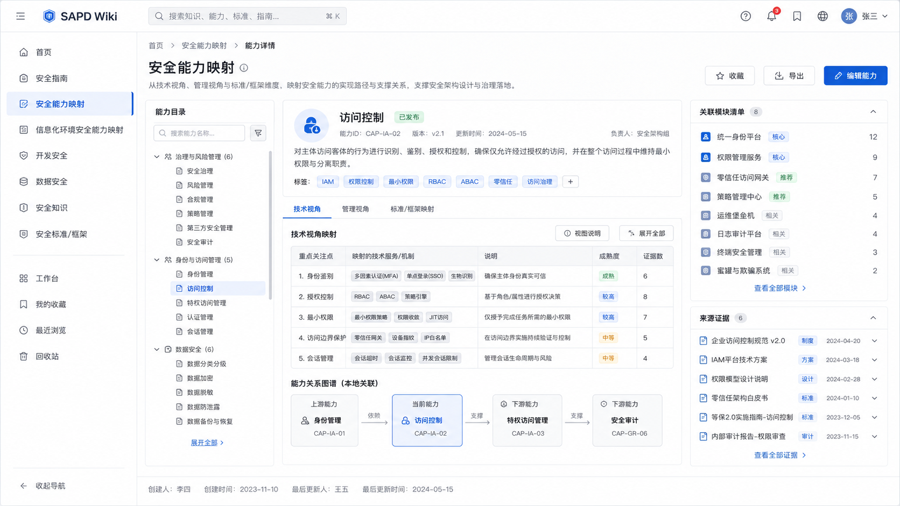
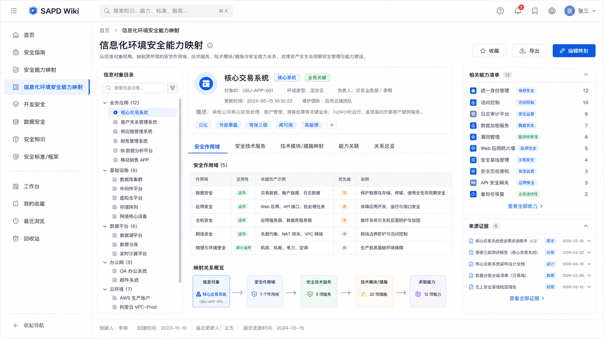

Local Security Architecture Knowledge Workspace
把安全知识从表格变成可核对的关系工作台
SAPD Wiki 面向安全架构和治理工作，把已导入的 Excel、指南、标准和底图资料整理成能力、环境、生命周期、知识目录和标准框架的结构化视图。使用时先从业务对象进入，再沿技术、管理、标准和来源证据逐层核对。
Current Imported Data
当前已导入数据的可用范围
下面的数量来自当前前端数据包摘要和环境底图绑定结果，用于说明“现在可以看什么”。说明页只展示业务级统计，不展开原始导入字段。
Use The Workspace
推荐从四类入口进入知识库
不要把它当普通文档库使用。更高效的方式是选中一个业务对象，然后沿它的关系链去核对技术服务、管理工作、标准映射和来源证据。
| 入口 | 适合回答的问题 | 主要展示 | 建议动作 |
|---|---|---|---|
| 安全能力映射能力关注点管理视角 | 某个安全能力关注点由哪些作用域、服务、模块、管理工作和标准控制项支撑。 | 左侧能力树、当前关注点关系图、技术视角矩阵、管理视角矩阵、标准映射。 | 先选 L0 / L1 / L2 / 关注点，再比较图谱摘要和表格明细是否一致。 |
| 信息化环境安全能力映射环境底图对象关系 | 某个信息化对象涉及哪些作用域、技术服务、模块、措施、系统和产品。 | Draw.io 官方 SVG 视觉底图、透明交互层、对象浮层、归纳表格。 | 先在底图里点对象，再到归纳表格核对服务和模块列表。 |
| LC-AP / LC-DT 生命周期阶段活动 | 开发或数据处理阶段需要匹配哪些安全活动、策略要求、服务和措施。 | 阶段页签、活动关系明细、右侧阶段详情和专项关系投影。 | 按阶段浏览，再用搜索定位活动或场景，检查阶段与能力关注点的覆盖。 |
| 知识库字典与标准框架目录标准 | 单独维护作用域、技术服务、模块、措施、管理流程、职能和标准条目。 | 维护表格、目录树、详情面板、标准控制项列表。 | 用于做数据核对和术语确认，不在这里临时推断跨表关系。 |
Visual Evidence
真实页面与底图效果
这些图来自当前工程中的前端交接图和已生成环境底图资源。用户查看时应优先关注关系是否能被核对，而不是把页面当作静态海报。



Recommended Review Flow
一次典型核对怎么走
知识库的价值在于发现映射缺口、命名不一致和关系断点。建议每次只围绕一个对象或一个业务问题推进。
选对象
从能力关注点、信息化对象、生命周期阶段或标准框架进入。
看关系
先看图谱或底图的上下游，再进入表格核对明细。
查覆盖
比较技术支撑、管理支撑、标准映射、环境可达和生命周期可达。
看证据
需要追溯时展开来源证据，普通浏览时不让证据字段干扰主视图。
记录问题
把缺口标为待确认，后续由导入规则或业务口径统一修正。
Coverage Reading
如何读覆盖率
首页的覆盖率不是工程健康分，也不是成熟度评分。它只是说明以 91 个安全能力关注点为主粒度时，哪些维度已经能被关系数据支撑。
| 维度 | 当前结果 | 含义 |
|---|---|---|
| 技术服务支撑 | 72.5% | 已有服务关系的能力关注点比例。 |
| 技术作用域 | 83.5% | 已有作用域关系的能力关注点比例。 |
| 管理工作 | 100% | 已有管理工作映射的能力关注点比例。 |
| 标准映射 | 96.7% | 已能映射到标准控制项的能力关注点比例。 |
| 环境可达 | 38.5% | 能从信息化环境视角触达的能力关注点比例。 |
Operating Notes
使用时的边界
- 1先看业务字段主展示区只放用户能理解的能力、对象、服务、模块、措施、流程和标准信息。
- 2不在前端造事实如果表格没有关系，不通过页面临时拼接或推断。
- 3来源证据后置证据用于追溯和审计，默认不抢占业务视图。
- 4本地优先运行固定预览入口为
http://127.0.0.1:5173/，静态数据包可作为降级读取来源。
Guide Assets
指南材料也在同一工作台中浏览
除结构化数据外，当前工作台也承载本地幻灯片式指南和 ArchiMate 建模语言参考，方便在做关系核对时回到方法论说明。